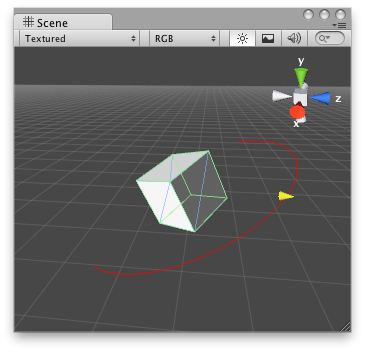

Handles.DrawWireArc
Parameters
| center | The center of the circle. | |
| normal | The normal of the circle. | |
| from | The direction of the point on the circle circumference, relative to the center, where the arc begins. | |
| angle | The angle of the arc, in degrees. | |
| radius | The radius of the circle Note: Use HandleUtility.GetHandleSize where you might want to have constant screen-sized handles. |
Description 描述
Draw a circular arc in 3D space.

Wire Arc in the Scene View.
using UnityEditor; using UnityEngine; using System.Collections;
//this class should exist somewhere in your project public class WireArcExample : MonoBehaviour { public float shieldArea;
// ...other code... }
// Create a 180 degrees wire arc with a ScaleValueHandle attached to the disc // that lets you modify the "shieldArea" var in the WireArcExample.js [CustomEditor(typeof(WireArcExample))] public class DrawWireArc : Editor { void OnSceneGUI() { Handles.color = Color.red; WireArcExample myObj = (WireArcExample)target; Handles.DrawWireArc(myObj.transform.position, myObj.transform.up, -myObj.transform.right, 180, myObj.shieldArea); myObj.shieldArea = (float)Handles.ScaleValueHandle(myObj.shieldArea, myObj.transform.position + myObj.transform.forward * myObj.shieldArea, myObj.transform.rotation, 1, Handles.ConeCap, 1); } }
And the script attached to this Handle:
no example available in C#